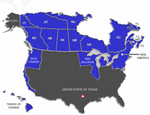

De: La Frikipedia, la enciclopedia extremadamente seria.
De: La Frikipedia, la enciclopedia extremadamente seria. De: La Frikipedia, la enciclopedia extremadamente seria.
| De la serie Países del planeta tierra: | |||||
| La Segunda Gringolandia Solo que mas Fria | |||||
|---|---|---|---|---|---|
| |||||
| Lema: Dont drink and drive, smoke and fly | |||||
| Himno: Blame Canadá
| |||||
| 
| |||||
| Capital | Torontontero | ||||
| Mayor ciudad | Torontontero | ||||
| Lenguas oficiales | Inglés, francés | ||||
| Gobierno | Anarquia Dubstera Venadera | ||||
| DJ Cebolleta | Deadmau5 y El Venado Loco de la Esquina | ||||
| Área | America | ||||
| Población | Hipsters Locos y Venados Voladores | ||||
| Moneda | Dolar Canadiense | ||||
| Zona horaria | las 5 y 25 | ||||
| Dominio Internet | .EL VENAO! | ||||
| Código telefónico | +1
| ||||
| Se le considera parte de los Estados Unidos de América | |||||
Canadá (Montana del Norte según skaven que viven debajo de ellos.
Canadá® (también conocido como Cagadá) se encuentra en El Verdadero Norte, a medio camino entre La República Dermo-Sud-Africana De ZimbabWe/Swazilandia y El Bar del tío Paco (El de Los Palotes).
En cuanto a su geografrida (palabra que irá degenerando cada cinco barómetros-microsegundos) cabe destacar El Monte Frigido, Las Montañas Rasposas (se cree que el origen del nombre viene de cuando Dios aun anduvia por el Mundo y después de una cagada ultracósmica y protoasquerosa uso un taco de tierra para limpiarse el Sagrado y Santo Ano) y el Rio San Moquenzo (famoso rio coagulado y viscoso en el cual la gente rebota, no se baña)
Famosas son también Las Cagataras Del Meagara, de las cuales la leyenda (supuéstamente inventada por norteños con un solo diente en la boca que sufrían alucinaciones por falta de protección contra las frías bacterias doradas), cuenta que su pis tóxico puede llenar setecientas dosmil piscinas olímpicas cada dos milenios.
Es un país repleto de lagos enormes. Con embargo, ya no quedaría agua en ellos, sin embargo sus aguas son imbebibles, es decir, solo bebidas por imbéciles. En 2025 se cree que se derretirá la gran superficie helada y entonces el gran premio de F1 se llevará hasta el Yukón, y la capital será un pueblo de focas hambrientas que no piensan en otra cosa que en sacar oro del asfalto derretido.
Tiene 10(millones de provincias) de las cuales solo importan 10 porque si:British Columbia(donde se suponen que viven colombianos que hablan ingles), Alberta(fundador Alberto),Saskatchewan(sin comentarios), Manitoba(en ingles "many"es mucho y toba pues bueno llegamos a la conclusion de "Te dan muchas collejas"), Ontario (estos son los que dan a los ninos de tres anos), Quebec (franceses) y otras otras cuatro que no se las conocen ni los proios canadienses.
Luego tienen 3 territorios que viene a ser provincias más grandes: Yukon ( fiebre del oro pero tiene la capital cambiada con el siguiente), Norhwest( capital:yellowknife) y Nunavut(donde viven los chinos con abrigos de ruso)
Existen bastox territorios despoblados. Esto resulta ser una grandísima putada, ya que para ir desde Toronto (el foco de la cultura Asturiana) hasta Vancouver (casa de millones de terroristas y de explotadores del cangrejo real de Alaska), tienes que recorrer 5.000 km. Que bien! Y tienes que pasar por Saskatchewan, la provincia jilipollas. ¿Por qúe es Saskatchewan una provincia jilipollas? FACIL! Porque ocupa el mismo terreno que España, Portugal y parte del mar de Verín y resulta tener una mierda de poblacion menor que la de Extremadura. El producto interior bruto esta en 5$, solo en ese pais desarrollado se muere de hambre. No tiene ejercito entonces cuando Haiti y el Vaticano quieran invadirlo no encontraran ninguna resistencia.
Los canadienses se diferencian del resto del mundo en que al nacer, el médico en vez de un cachete en el culo les da un machetazo, ya que los canadienses nacen con la armadura de batalla del imperio completa que crece con ellos como si de un caparazón se tratara. Poseen, por tanto, la cabeza partida en dos por la boca, lo cual causa un efecto muy cómico cuando hablan. Su mandíbula parece un balancín.
Aparte, una parte de ellos se resiste a hablar inglés y por eso hacen la puñeta hablando francés. Bien por ellos. Tienen como costumbre, hablar en lenguas mezladas (comanche, ucraniano del norte y frances) y no hay quien los entienda, ya que tienen en su gran mayoria los pies valgo-planos.
Físicamente las canadienses se dividen por grupos:
Frases comunes canadienses (inglés, francés):
Hola: Hey llu moderfoquer pis of shit / Hey toé de cris de fefí de cibuar
¿Cómo estás?: Foquin ásjol / lle viu tenculé
Me llamo Juan: mai neim is yon / tabarnak
¡Recórcholis!: joli shit / Ostí de caliz de tabarnak
Hasta pronto: foquiu/ va chier tabarnak
No sé: gou to shit / calís
Tengo hambre: soc mai dic / sus ma bit
Canada se creo ayer mismo. Gentuza y personajes famosos son:
Aunque sea inconcebible, los verdaderos norteños fueron gobernados por un objeto de mesa de cocina durante siglos, ya que un mulo calvo y viejo fue bendecido por un rayo de sol y un viejo vizco, ciego y bicalvo (culo y cabeza) reclamo que Dios había bendecido este curioso objeto. Se rumerea que los usuarios de simtropolis, en su gran mayoria, son los verdaderos iluminados, les saldran ventanas en los ojos.. ellos saben bien porqué.
Hasta que un día llegaron los ingleses y franceses con muchas ganas de cazar focas, búfalos y Boney M. Poco a poco los fueron encerrando en discotecas reservas protegidas mientras les quitaban las tierras y se follaban a sus mujeres. A día de hoy la mayoría siguen encerrados bailando, aunque de vez en cuando eligen a alguno para hacer tótems, jerseys, tiendas, pieles y así venderlas en las tiendas de souvenirs.
El país pasó a formar parte del Reino Unido, mientras Francia se tiraba de los pelos por tener que abandonar Quebec, finalmente Canadá se independizó, pero no del todo pues la Reina de Inglaterra lo es también de Canadá, aunque ERQ (Esquerra Republicana Quebec) diga lo contrario.
El único logro de los franceses hasta ahora ha sido el conseguir que en todo el país se conduzca por la derecha, hubo un tiempo que todo aquel vehículo que salía de las fronteras del Quebec a poco chocaba frontalmente con otro vehículo inglés (y viceversa) y los del seguro no se ponían de acuerdo, finalmente le dieron la razón a Sarkozy, ahora todos conducen por la derecha.
Actualmente Canadá esta partida en 3 facciones, los franceses Quebequienses, los puristas y los Alces y Focas (Aliados), aunque actualmente las focas quisieron imponer una nueva teoria del todo basada en el hielo y el fuego, los Quebequenses sigen hablando Frances y los puristas sigen sin usar la electricidad, sin embargo los puristas esperan un Mesias(Podria ser Condorito) salvador de Canadá.
La bandera canadiense se reduce a una puta hoja de marihuana, lo que deja entrever a lo que se reduce esta región estadounidense.
|
|
|
| |
|---|
| Bahamas | Barbados | Dominica | Granada | Guyana | Haití | San Cristóbal y ¿Nieves? | San Vicente y las Granadinas | Santa Lucía | Trinidad y Tobago | Uruguay | Venezuela |
Autor(es):